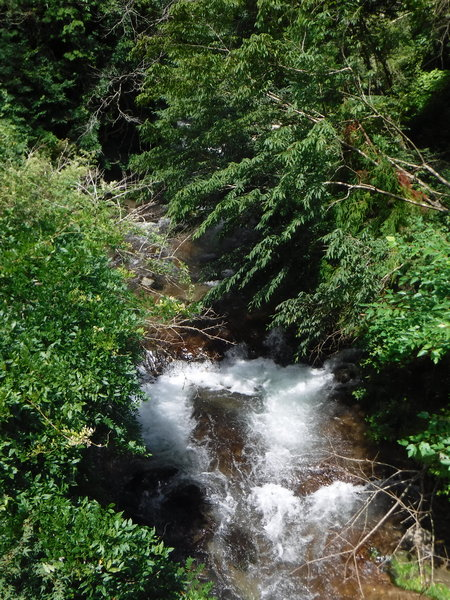
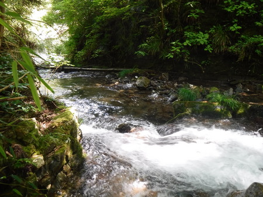
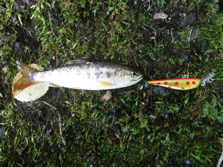
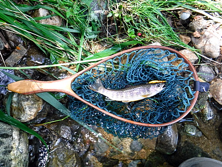
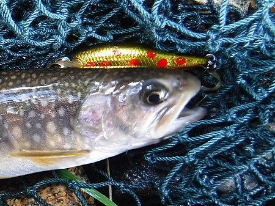
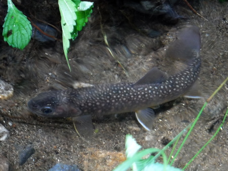

釣行日誌 故郷編
2022/07/29 岡田君特製のランディングネットに入魂
古くからの親友で、最も良き釣友でもある岡田君が、特製のランディングネットを作ってくれた。フレームの形状、ネットの色合い、すべて僕の要望を聞いて作ってくれたオーダーメイドである。先週、丁寧に梱包されて届いたので、今日はベストに装着して、いざ、出陣である。何とか、この銘品に見合ったイワナを釣りたいものである。
朝 7:30 にガソリンスタンドでやっている格安レンタカーを借りて、大荷物を積み込み、7:40 に出発した。
おなじみの村の雑貨店にて入漁券を買う。愛想の良いおばさんと（本当は僕より若いかも知れない.....）しばし歓談し、最近の釣り場状況、クマ出没情報などを仕入れ、現地へ急ぐ。
現地には 10:20 に着いた。事前の降雨量・水位データベースの情報から予測したよりも、あまり水が出ていない。意外と早く引いたようだ。
橋の上から水況を偵察し、支度をして、例によって、この間、良い思いをした沢から入る。

ところが、最初の良いポイントで、沢をまたいで掛かっていたワイヤーにスピナーを掛けて無くす。（泣）

次のポイントで、まずまずのイワナが掛かったが外れる。こんどは堰堤の落ち込みをミノーで攻めたらヒット、しかし、またばらし。どうもイカン。
堰堤の沢から本流へと釣り下って行く。アシのすき間からフローティングミノーを流し込むが、反応無し。
クモの巣がひどくて閉口する。
良いポイントが次から次へと続くが、なぜか、魚が出ない。
よく見ると、どこの淵尻でも、小さなアマゴが緩流帯でエサをしきりにあさっている。
小さなアマゴがヒット、早る心を抑えつつランディングしたが、写真を撮すほどではない。（強がり）

待てよ、と思い、動画を撮ってみる。ところが魚が小さすぎてわからない.（笑）
三時間ほど本流を攻めたが、あまりに釣れないので、大物は上流へ移ったか？と、転戦。
集落に点在するビニールハウスの間から、最上流の区間へ降りる。少し歩いて、堰堤上の流れから元気の良いイワナがヒットした。ジャンプを魅せて、良いファイトをした。６ポンドラインでぶっこぬいて、それからネットに入れて撮影大会。（笑）

素晴らしい仕上げと工作の岡田君特製ランディングネット
綺麗なイワナだった。信頼している黒金＋赤斑点のフローティング・ドクターミノーにヒットした。

しかし、この編み目、一つ一つを手で編み込んでくれたのかと思うと、感謝の言葉も無いのであった。しかも、柄の末端に付いている装着用の金具は、回転式となっていて、こんな部品も見つけて取り付けてくれたのだ。
リリースしたら、岸辺のすき間にしばらく留まっていた。行き場がわからなかったのか？ 水の中に佇むイワナも美しい。

しばし釣り下ったが、上流の区間はどこも堰堤でぶつ切りで、これでは魚も移動できないし、増えられないだろうと思った。
またしても転戦して、下流の集落から入渓してみる。小径から岸辺に降りて、出水具合の良い渓を攻めるが、反応無し。
レンタカーの返却時間を気にしながら、もう一時間だけ粘ってみる。
昨年イワナが出たポイントも沈黙のまま。これで竿を納めて引き上げてきたら、農道に妙齢のご婦人方が三人、暑いのに立ち話をしている。そこへ上から別のご婦人が歩み寄ってきて、
「あんたは何を売りに来ただね？」
と聞かれる。（笑）
濡れて重いウェーディングシューズ、スパッツ、タイツを脱いで、乾いたズボンと靴下を履くと、生き返った気分になった。サーモスの熱いコーヒーを飲んで、帰途につく。19:20にレンタカーを返却し、カブに大荷物を積んで帰宅。
何とか、岡田君のネットに魂を入れることが出来たかな。一安心である。
ベッドに倒れ込み、爆睡した。
釣行日誌 故郷編 目次へ
サイトマップ
ホームへ
お問い合わせ